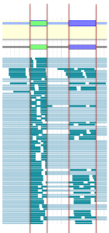
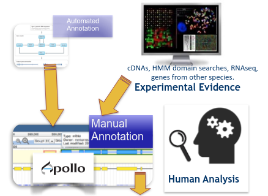

Refining Genome Annotations with Apollo
Contributors
 Anthony Bretaudeau
Anthony Bretaudeau  Helena Rasche
Helena Rasche  Nathan Dunn
Nathan Dunn  Mateo Boudet
Mateo Boudet
Questions
How to visualize your genome after automated annotations have been performed?
How to manually annotate genome after automated annotations have been performed?
How to evaluate and visualize annotated genomic features?
How do I collaborate when doing genome annotation?
Objectives
Load a genome into Galaxy
View annotations in JBrowse
Learn how to load JBrowse data into Apollo
Learn how to manually refine genome annotations within Apollo
Export refined genome annotations
Genome annotation
-
Classifies and describes parts of the genome sequence
-
Focusing on genes: their positions, names and functions
-
Automatic methods to annotate a newly sequenced and assembled genome
.image-50[ ]
]
Speaker Notes
- Annotating a genome means positioning features along the sequence of a genome.
- Here we focus on genes.
- We are interested in their positions, and functional annotation like their name of their function.
- Many software tools and pipelines exist to automatically perform the annotation of a new genome sequence.
- For example Prokka or Maker are widely used, and tutorials are available on the GTN to learn how to use them.
Automatic annotations are not perfect
.pull-left[
-
Assembly errors can cause fragmented annotations
-
Limited and/or noisy evidence coverage makes precise identification difficult ]
.pull-right[.image-40[]]
Speaker Notes
- Unfortunately, automatic annotations are rarely perfect.
- Assembly errors can cause fragmented annotations.
- Annotation tools have difficulties annotating genes when evidences like RNASeq are lacking or too noisy.
Manual curation refines genome annotations
-
Make use of the researcher’s expertise
-
Include additional analysis results
-
Integrate all underlying evidence
-
A Human finds problems algorithms can’t
.pull-left[.image-90[]]
.pull-right[.image-40[]]
Speaker Notes
- Performing a manual curation step after automatic annotation allows to improve annotation quality.
- It is a way to make use of a researcher’s expertise, and to integrate more knowledge to improve gene structures and functional annotation.
Apollo
“Google Docs for Genome Annotation”
.image-50[ ]
]
Collaborative web application to edit annotation
Both structural and functional annotation
Based on JBrowse: JBrowse is for visualising only, Apollo allows to edit
Speaker Notes
- Apollo is a web application specifically designed for the manual curation of annotations.
- You can see Apollo as the “Google Docs” of annotation.
- It is a multi-user, real time, collaborative environment.
- Users can easily change the structure of genes, and add functional annotation like gene names of Gene Ontology terms.
- Is is based on JBrowse.
- JBrowse is for visualising genomes, while Apollo adds the editing capabilities.
Apollo
-
Modify gene structures (based on evidence tracks)
-
Add functional annotation
.pull-left[.image-90[ ]]
.pull-right[.image-90[
]]
.pull-right[.image-90[ ]]
]]
Speaker Notes
- Within Apollo, you can easily change the structure of genes, based on evidence tracks.
- Apollo offers an interactive interface to help you add functional annotation.
Apollo
Multi user environment: users can login, and make/see changes in realtime
Full history of changes, reverting is possible

Speaker Notes
- Apollo is a multi-user environment, which means multiple users can login at the same time, make changes, and see changes of other users in real time.
- Apollo keep track of every action performed on each gene in a history. You can revert any change at any time.
Apollo in Galaxy
Integrate Apollo in your whole analysis project in Galaxy
- Run assembly
- Align evidences along the genome (RNASeq, CDS, proteins)
- Run automatic annotation pipeline
- Create a JBrowse instance
- Load the JBrowse instance into Apollo
- Use Apollo to manually curate annotation with collaborators
- Export back the curated annotation into Galaxy
- Continue analysing in Galaxy
Available on https://usegalaxy.eu
Speaker Notes
- Apollo is now tightly integrated with Galaxy, which allow to integrate the manual curation process in a complete Galaxy-based analysis workflow.
- Within Galaxy, you can start by assembling a new genome, then aligning as many evidence tracks as possible (like RNASeq data).
- You can then continue with an automatic annotation step, with Prokka or Maker for example.
- Then you can generate a JBrowse instance representing all the data you have generated, and load it into Apollo.
- Apollo let’s you perform the manual curation, in collaboration with any other colleague you invite to help you.
- Finally when you are satisfied with your changes, you can export them to your Galaxy history, and continue other analyses.
- At any time later you can come back to Apollo to continue improving the annotation, based on new experiment results.
Apollo in Galaxy: collaborating
Invite any other Galaxy user to your curation project

Speaker Notes
- By default you are the only one having access to genomes you load into Apollo.
- A specific module of the Apollo-Galaxy bridge allows you to open the access to a genome to any other Galaxy user.
hands_on Hands on!
Time to follow the Apollo tutorial!
Speaker Notes
- You can now follow the Apollo tutorial to learn how to use it in real life.
Key Points
- Apollo is the Google Docs of the genome annotation world, real-time collaborative genome annotation.
- Apollo allows a group to view and manually refine predicted genome annotations
- Use Apollo to edit annotations within your group.
- Export manual annotations as GFF3.
Thank you!
This material is the result of a collaborative work. Thanks to the Galaxy Training Network and all the contributors! This material is licensed under the Creative Commons Attribution 4.0 International License.
This material is licensed under the Creative Commons Attribution 4.0 International License.